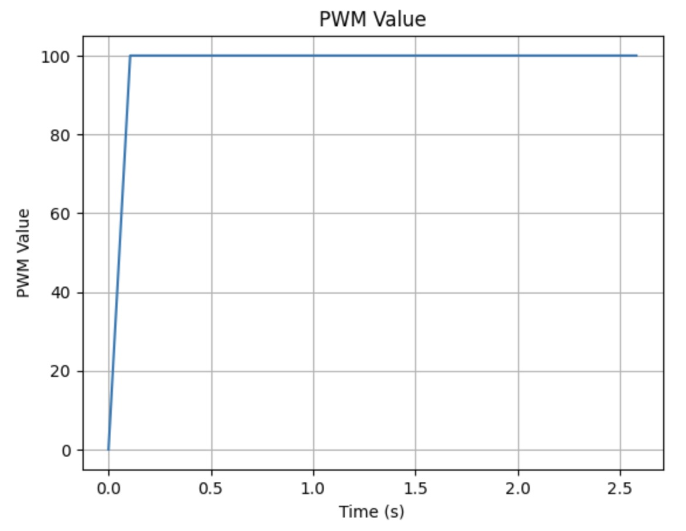
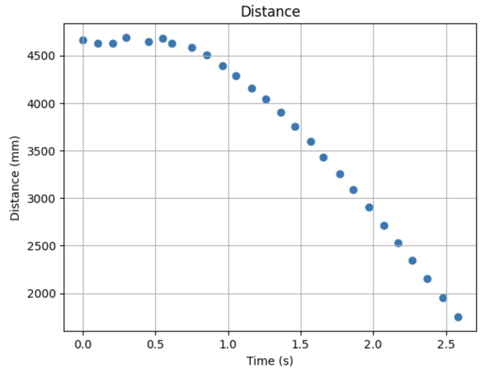
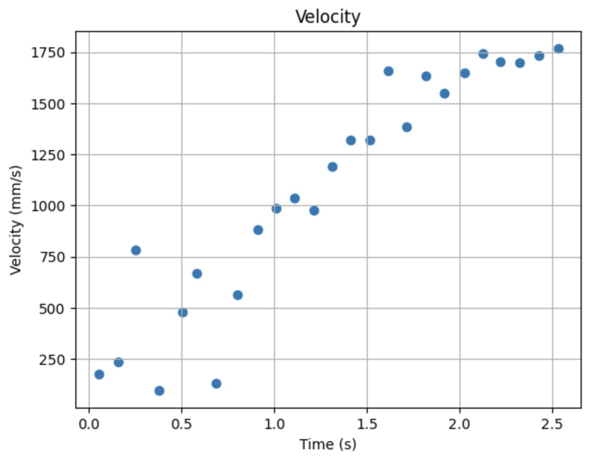
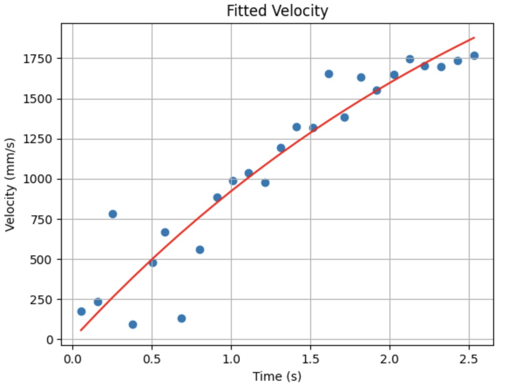
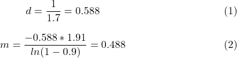
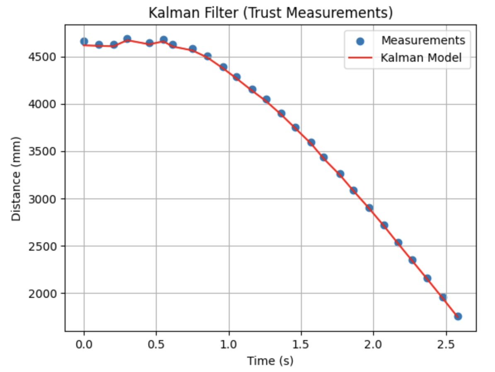

Lab 7: Kalman Filter
Drag and Momentum Estimation
I use a step response to estimate drag and momentum by initially setting the PWM to 0 and then applying a constant PWM value. I chose a PWM of 100, which is about 39% of the maximum PWM used in my linear PID lab, instead of the recommended 50-100% of the maximum u, because the robot moved too quickly at higher PWM values, making it difficult to collect a sufficient number of data points.

The distance and velocity graphs are shown below. In the velocity graph, you can see that the velocity settles on a value of ~1700 mm/s at time ~2.12s. I estimate the 90% rise time to be ~1.91s. The speed at 90% rise time is ~1666 mm/s. This estimate is based on my fitted velocity graph, though the fit isn’t perfect and doesn’t accurately capture the settling at the end. I had difficulty adjusting the fitted curve so I have attached my best attempt.



The following equations can be used to calculate drag and momentum.

For ease of calculation, I converted my values to SI units before performing the calculations.

KF Implementation in Python (Simulation)
Putting more trust in our model, the Kalman graph deviates from my measurements too much.
Putting more trust in our measurements, the Kalman graph matches the measurements almost exactly. I used the parameters: sigma1 = 500 = sigma2 and sigma 3 = 45.

KF Implementation on the Robot
References
I heavily referenced Professor Helbling’s slides and pages written by Stephan and Mikayla. I discussed ideas with Becky and Akshati.